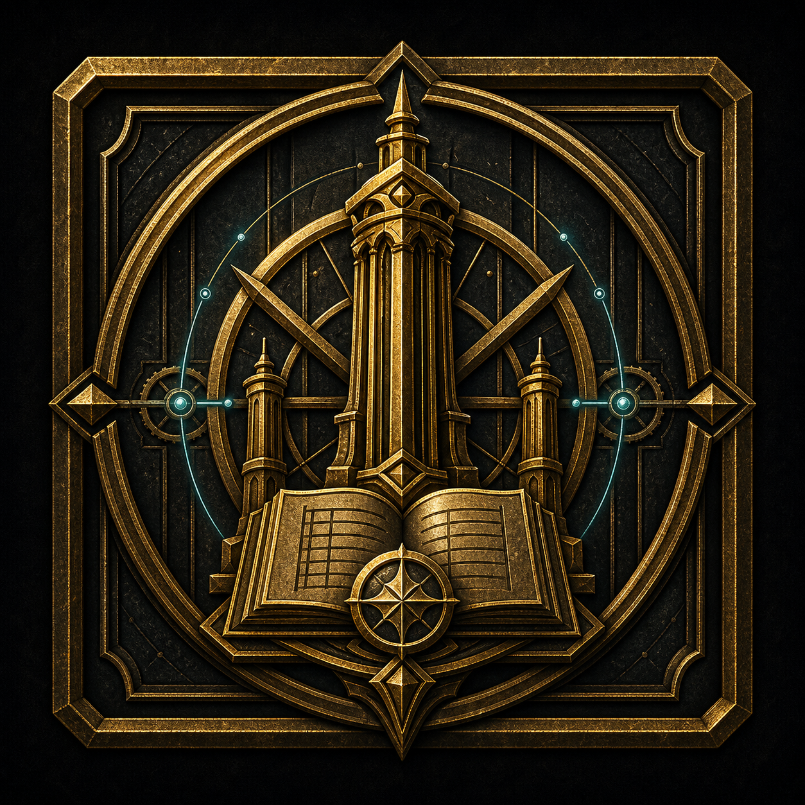

Act Five · The Ward Renewal
S05-02 · Short Rest Before the Storm
The party takes a short rest while the Custodian prepares the ritual.

Storyboard
This is the breath before the ordeal. Let characters tend wounds, prepare, or share one quiet line. Run this scene as ordeal, ritual defense, and restoration: The short rest is a pressure valve, not dead air. Keep the camera close to practical choices, visible consequences, and the difference between ordinary people and the infrastructure pressing on them.
Manufactured-threat seeds
Seed, Do Not Reveal
Perceived antagonist: the forest. True antagonist: the corporate lie about the forest. The players never confront it directly. They are meant to feel it by the end.
Use the act-wide seed menu if players investigate here.
Act-wide seed menu
- Soul-Audit Wraiths bear audit glyphs and say, "Unlicensed soul-resonance detected. Submit for audit."
- A defeated wraith leaves a

Soulspire compliance tag or coil-credit token instead of natural remains. - Wraiths ignore forest creatures and home only on ritual soul-magic. (Instinct Medium 15)
- A player can read the markings and name Soulspire without the GM naming it first. (Knowledge Medium 15)
- Optional flag: Legacy Skeletons carry scraps of old corporate credentials.
Player-Facing Read-Aloud
For a little while, the Old Sable gives you room to breathe.
Linked Entities
Player Questions / RP Hooks
- During the short rest, who helps someone else without making a big deal of it?
- What do you prepare that is not a weapon?
- What fear do you admit before the ritual starts?
Relationship Prompts
- Which PC quietly checks on someone else here?
- Who disagrees about the right thing to do without breaking trust?
Scene Ownership Prompt
Name one detail in Short Rest Before the Storm that belongs to your character's point of view.
Class / Ancestry / Community Reveals
- Loreborne or Knowledge-focused PCs can read the institutional layer.
- Wildborne/community-focused PCs can read local custom and ecological stress.
- Martial/security-focused PCs can read threat posture and custody logic.
- Magic-focused PCs can feel ward tone, soul-signal, or spell instability.
- Loreborne: spots older legal, heraldic, or ward-craft language under the branding.
- Underborne: notices service doors, hidden routes, and who built the thing nobody credits.
- Highborne: reads etiquette, class panic, and reputational risk.
- Ridgeborne: notices stonework, weight, pressure, and structural weakness.
- Wildborne: reads the land, animals, and local ecological stress.
- Elf/Ribbet/Human/Giant/Katari: invite one sensory or social detail from the player's heritage.
- Sorcerer/Rogue/Warrior/Guardian/Ranger: give each class one table-facing way to shine without changing the plot.
Mechanics in Play
Plot So Far: The party is in Act Five pressure: The party takes a short rest while the Custodian prepares the ritual.
- Use Daggerheart Duality Dice as baseline.
- Use the listed Difficulty and outcome options when a roll matters.
- Keep trivial actions no-roll; roll only when uncertainty, cost, or danger is interesting.
Trait Variety: Primary traits in this scene: Finesse, Knowledge, Presence. If rolls drift toward Instinct/Presence, ask whether Agility, Strength, Finesse, or Knowledge better describes the action.
Official Result + Outcome Options
Use the short rest with intention
Roll: Use the short rest with intention
Trait Options: Presence, Finesse, Knowledge
Why These Traits: Presence tends emotions; Finesse repairs gear; Knowledge prepares the field.
Stakes: The rest becomes bookkeeping instead of care before danger.
Dice Mode: Roll Hope and Fear d12s, add the chosen trait, compare to the Difficulty, then read the higher die for Hope/Fear spin.
Official Daggerheart Results
| Critical Success | Critical Success: best possible version of the action; gain Hope and clear 1 Stress. Add an extra benefit that follows from the fiction. |
|---|---|
| Success with Hope | Success with Hope: the PC gets what they wanted and gains Hope. Keep the position clean or generous. |
| Success with Fear | Success with Fear: the PC gets what they wanted, but the GM gains Fear and introduces a cost, complication, or pressure. |
| Failure with Hope | Failure with Hope: the PC does not get the full result, but gains Hope and receives a useful thread, clue, or safer next option. |
| Failure with Fear | Failure with Fear: the PC fails and the GM gains Fear. Make a hard move that follows from the fiction. |
Outcome Options Around DC 10
| Hard Failure<= DC - 5 | The rest becomes bookkeeping instead of care before danger. Use a hard complication, lost time, worse position, GM Fear, or mark Stress. Apply an official condition only if the fiction and rules justify it. |
|---|---|
| Near MissDC - 4 to DC - 1 | The attempt falls short, but a partial thread appears. Offer one clue, weak position, or safer follow-up. |
| Mixed SuccessDC to DC + 4 | The PC gets the core result, but it costs time, noise, leverage, or a visible resource. |
| Strong SuccessDC + 5 to DC + 9 | The result lands cleanly. Give the useful truth or position without extra cost. |
| Exceptional Success>= DC + 10 | The result lands with leverage: add a bonus clue, better position, or future advantage. Possible loot: Soul-Quiet Charm, Firstmoss Poultice. |
| Critical Successmatching Duality Dice | Best case regardless of total: gain Hope, clear 1 Stress, and add a small concrete gift or clue. |
Hope Spin
Gain Hope. Let the Hope result make the scene more generous, clear, or player-directed when it fits the fiction.
Fear Spin
GM gains Fear. Add pressure, reveal cost, spotlight a threat, or advance a visible consequence.
GM Fear Spends
- Advance a visible timer or move a threat into better position.
- Reveal an omitted clause, route cost, ward symptom, or human consequence.
Relevant Official Conditions
None
Class / Community / Ancestry Reveals
- Ask who helps someone else without making a big deal of it.
Official Conditions / Hazards
- No official condition unless a feature, hazard, or fictional position calls for Hidden, Restrained, or Vulnerable.
Search / Loot / Clues
No fixed loot. Offer clue, texture, or hospitality only when the fiction supports it.
No-Roll Guidance
Do not call for a roll when the players have time, a clear method, and no meaningful pressure.
Escalation / De-escalation
Escalate: Escalate by making cost visible: time, noise, trust, ward instability, or someone vulnerable in danger.
De-escalate: De-escalate through respect, care, honest testimony, useful evidence, or a concrete concession.
Class / Community / Ancestry Reveals
- Loreborne: spots older legal, heraldic, or ward-craft language under the branding.
- Underborne: notices service doors, hidden routes, and who built the thing nobody credits.
- Highborne: reads etiquette, class panic, and reputational risk.
- Ridgeborne: notices stonework, weight, pressure, and structural weakness.
- Wildborne: reads the land, animals, and local ecological stress.
- Elf/Ribbet/Human/Giant/Katari: invite one sensory or social detail from the player's heritage.
- Sorcerer/Rogue/Warrior/Guardian/Ranger: give each class one table-facing way to shine without changing the plot.
Maps / Combat Workspaces
Use the scenic image for mood and the map board for spatial orientation. Battlefield maps include a dedicated combat workspace when the scene can turn violent.
Open Vale Ritual Arena
AI-generated battle map

Read-Aloud
The ritual clearing becomes a battlefield because the ward itself is under pressure. The Custodian and Keystone hold the center while old security bodies and audit-cold spirits test every gap around them.
Sensory Palette
- Sight: The ritual circle, Custodian, Keystone, skeleton lanes, and wraith edges create a battlefield that points inward.
- Sound: Bone clicks like old locks, wraith voices flatten into audit language, ward grooves crackle, and the Custodian's breath marks the countdown.
- Smell: Ozone, cold ash, wet stone, old bone dust, and the antiseptic sharpness of magic trying to price a soul.
- Texture / air: Grass stiffens with frost near wraiths; stones buzz under a hand; the center feels warmer only when someone protects it.
- Background life: The enemies are procedural, but the stakes are communal. Keep returning attention to who and what the ritual protects.
GM Location / Battlefield Notes
GM Orientation
The climax. A perfect circular clearing — the only break in the canopy — where the Custodian first forged Hush's ward pillars. The party takes a Short Rest, then defends her through the ward-renewal ritual against waves of skeletons and Soul-Audit Wraiths while a countdown die ticks. Win condition: survive until the ritual completes, not "kill everything."
GM Understanding
- The Custodian and Keystone hold the center; PCs form a protective ring while skeletons rise Close and wraiths pressure from Far.
- Skeletons rise from Close ground; Wraiths drift from Far edges toward the ritual center.
- Relentless but procedural; threats follow old infrastructure logic.
Interactables
- Whitefire Custodian
- Keystone Asset
- Ritual Countdown
- ward-light boundary
Hazards / Pressure
Checks / Ways to Read the Space
- Knowledge to read the ward pattern.
- Strength or Finesse to hold a breach point.
- Presence to keep the Custodian anchored.
What players can do
Talk with the Custodian before the ritual
Trait: — Difficulty: —
Canon: she describes the site, her near-death forging the pillars, her fear of the Forgotten Gods. RP beat.
Short Rest moves
Trait: — Difficulty: —
Canon (p.34): each PC picks 2 — Tend to Wounds (clear 1d4+1 HP), Clear Stress (1d4+1), Repair Armor (1d4+1 slots), Prepare (gain Hope; 2 if with a party member).
Read the clearing for danger before it starts
Trait: Instinct Difficulty: 14
Success: they sense from which directions the creatures will come — lets a PC pre-position to defend the Custodian.
Defend the Custodian in the fight
Trait: Attack/Agility Difficulty: —
Her Difficulty is 11; she takes only narrative damage; every hit on her ticks the countdown up.
Fear Pressure
- Environment Feature — Market Correction (canon): spend a Fear to summon two additional Legacy Skeletons from the ground within Very Close range of a PC. Use it to keep the countdown moving (skeletons die easily → countdown ticks down on each defeat).
- The Wraiths' Memory Delve and Pass-Through are your big Fear spends — use Pass-Through sparingly (it can lock a PC out; if the whole party goes Untethered they all mark 2 HP and snap back).
- Spend Fear: the open sky flickers — for one beat the stars rearrange wrongly (Forgotten Gods watching). Narrative dread, no mechanics.
Combat
- The ritual countdown (p.35): Set a d8 to 8. Ticks down 1 each time an adversary is defeated; ticks up 1 each time the Custodian is hit. At 0, the ritual completes → Epilogue.
- Setup (p.35): Custodian standee center; PCs around her; 4 Legacy Skeletons in Close range of her; 2 Soul-Audit Wraiths in Far range.
- Legacy Skeleton — Tier 1 Standard (×4)
- Rusted Sword: Melee, 1d6+1 phy · ATK +0 · Difficulty 12 · HP 2 · Stress 1 · Thresholds 7/none
- Battle guide: roll d20 (no ATK mod) vs Evasion; hit → 1d6+1. Take 6 or less damage → mark 1 HP; otherwise defeated.
- Group Attack (Feature): spend a Fear, move several skeletons into Melee, one shared attack roll at +0; on success deal 4 phy per skeleton, combined into one hit.
- Soul-Audit Wraith — Tier 1 Bruiser (×2)
- Lifedrain: Far, 2d6+8 mag · ATK +3 · Difficulty 13 · HP 6 · Stress 3 · Major 7 / Severe 14
- Spectral Body (Passive): resistance to physical damage (incoming physical halved, round up).
- Memory Delve (Action): attack a Close target; on hit, the wraith places a hand on their cheek — ask the player to describe a terrifying childhood moment — then 3d4+9 magic and Vulnerable until next rest.
- Pass-Through (Action): spend a Fear, attack a Melee target; on success the PC is Untethered (can't act until the countdown ticks down). Whole party Untethered at once → all mark 2 HP, souls return, condition cleared.
- Open Vale Site — Environment, Tier 1 Exploration
- Feature Market Correction (Action): spend a Fear to summon 2 Legacy Skeletons within Very Close of a PC.
- GM guidance (p.35): if the countdown stalls, use Market Correction to spawn easy skeletons. If no PC is in range, adversaries target the Custodian (Difficulty 11, narrative damage only). Death move (Quickstart): a PC at last HP falls unconscious until healed or the danger passes — not dead.
Transitions
- In: From the Treehouse (05), Act Five.
- Out: Countdown hits 0 → ritual completes → the Keystone Asset epilogue (see 07 for the sequel hook).
Hidden Truth Layer
- GM-only hidden truth: Soul-Audit Wraiths and Legacy Skeletons read as corporate instruments, not natural spirits.
- Run Memory Delve as extraction and the skeletons as repossessed/decommissioned labor logic, while keeping the reveal subtextual.
Canon Source Note
Countdown rules, all three stat blocks, the environment feature, Short Rest options, and GM guidance are module-canon (pp.34–35).
Visual inspiration alternate
Use this for mood, location flavor, and player visualization. Use the primary map above for playable space.
Schematic alternate
Older schematic reference board kept for quick adjudication only. The image above is the primary map asset.
Open Vale™ Ritual Site Location Map
AI-generated location map

Read-Aloud
The trees break around an old clearing of standing stones, wet grass, and pale ward-light. Official markers call it Open Vale, but the place feels older than the paperwork and more awake than a ruin.
Sensory Palette
- Sight: Standing stones ring wet grass and ward grooves; old runes and newer markers disagree about what the clearing is for.
- Sound: The wind falls away near the center, ward-light ticks in stone seams, and every voice comes back slightly lower.
- Smell: Cold mineral air, wet grass, stone dust, whitefire ozone, and the faint sweetness of crushed clover under lightning.
- Texture / air: The ground feels firm until the ward hum rises; then each footstep seems to answer through the soles of the boots.
- Background life: Animals avoid the center but circle the edge. The clearing is not dead; it is bracing for work.
GM Location / Battlefield Notes
GM Orientation
The climax. A perfect circular clearing — the only break in the canopy — where the Custodian first forged Hush's ward pillars. The party takes a Short Rest, then defends her through the ward-renewal ritual against waves of skeletons and Soul-Audit Wraiths while a countdown die ticks. Win condition: survive until the ritual completes, not "kill everything."
GM Understanding
Interactables
- standing stones
- ward grooves
- ritual center
- corporate marker
- Keystone position
Hazards / Pressure
- The Custodian cannot defend herself while channeling.
- Old protection logic may target the wrong priorities.
- Standing too far from the ritual line turns help into distance.
Checks / Ways to Read the Space
- Knowledge to read ward geometry.
- Instinct to place the party where pressure will arrive.
- Presence to steady the Custodian before the ritual starts.
What players can do
Talk with the Custodian before the ritual
Trait: — Difficulty: —
Canon: she describes the site, her near-death forging the pillars, her fear of the Forgotten Gods. RP beat.
Short Rest moves
Trait: — Difficulty: —
Canon (p.34): each PC picks 2 — Tend to Wounds (clear 1d4+1 HP), Clear Stress (1d4+1), Repair Armor (1d4+1 slots), Prepare (gain Hope; 2 if with a party member).
Read the clearing for danger before it starts
Trait: Instinct Difficulty: 14
Success: they sense from which directions the creatures will come — lets a PC pre-position to defend the Custodian.
Defend the Custodian in the fight
Trait: Attack/Agility Difficulty: —
Her Difficulty is 11; she takes only narrative damage; every hit on her ticks the countdown up.
Fear Pressure
- Environment Feature — Market Correction (canon): spend a Fear to summon two additional Legacy Skeletons from the ground within Very Close range of a PC. Use it to keep the countdown moving (skeletons die easily → countdown ticks down on each defeat).
- The Wraiths' Memory Delve and Pass-Through are your big Fear spends — use Pass-Through sparingly (it can lock a PC out; if the whole party goes Untethered they all mark 2 HP and snap back).
- Spend Fear: the open sky flickers — for one beat the stars rearrange wrongly (Forgotten Gods watching). Narrative dread, no mechanics.
Combat
- The ritual countdown (p.35): Set a d8 to 8. Ticks down 1 each time an adversary is defeated; ticks up 1 each time the Custodian is hit. At 0, the ritual completes → Epilogue.
- Setup (p.35): Custodian standee center; PCs around her; 4 Legacy Skeletons in Close range of her; 2 Soul-Audit Wraiths in Far range.
- Legacy Skeleton — Tier 1 Standard (×4)
- Rusted Sword: Melee, 1d6+1 phy · ATK +0 · Difficulty 12 · HP 2 · Stress 1 · Thresholds 7/none
- Battle guide: roll d20 (no ATK mod) vs Evasion; hit → 1d6+1. Take 6 or less damage → mark 1 HP; otherwise defeated.
- Group Attack (Feature): spend a Fear, move several skeletons into Melee, one shared attack roll at +0; on success deal 4 phy per skeleton, combined into one hit.
- Soul-Audit Wraith — Tier 1 Bruiser (×2)
- Lifedrain: Far, 2d6+8 mag · ATK +3 · Difficulty 13 · HP 6 · Stress 3 · Major 7 / Severe 14
- Spectral Body (Passive): resistance to physical damage (incoming physical halved, round up).
- Memory Delve (Action): attack a Close target; on hit, the wraith places a hand on their cheek — ask the player to describe a terrifying childhood moment — then 3d4+9 magic and Vulnerable until next rest.
- Pass-Through (Action): spend a Fear, attack a Melee target; on success the PC is Untethered (can't act until the countdown ticks down). Whole party Untethered at once → all mark 2 HP, souls return, condition cleared.
- Open Vale Site — Environment, Tier 1 Exploration
- Feature Market Correction (Action): spend a Fear to summon 2 Legacy Skeletons within Very Close of a PC.
- GM guidance (p.35): if the countdown stalls, use Market Correction to spawn easy skeletons. If no PC is in range, adversaries target the Custodian (Difficulty 11, narrative damage only). Death move (Quickstart): a PC at last HP falls unconscious until healed or the danger passes — not dead.
Transitions
- In: From the Treehouse (05), Act Five.
- Out: Countdown hits 0 → ritual completes → the Keystone Asset epilogue (see 07 for the sequel hook).
Hidden Truth Layer
- GM-only hidden truth: Soul-Audit Wraiths and Legacy Skeletons read as corporate instruments, not natural spirits.
- Run Memory Delve as extraction and the skeletons as repossessed/decommissioned labor logic, while keeping the reveal subtextual.
Canon Source Note
Countdown rules, all three stat blocks, the environment feature, Short Rest options, and GM guidance are module-canon (pp.34–35).
Schematic alternate
Older schematic reference board kept for quick adjudication only. The image above is the primary map asset.
Old Sable Location Map
AI-generated location map

Read-Aloud
Beyond the managed road, Old Sable becomes the older forest underneath the brand: huge roots, swallowed markers, low canopy, and a quiet that feels like attention rather than emptiness.
Sensory Palette
- Sight: Ancient trunks lean over the road until the sky becomes a thin green seam; old stones and moss shelves guide travel better than signs.
- Sound: Leaf-drip, distant wingbeats, branches rubbing like low speech, and bird calls that restart behind the party but not ahead.
- Smell: Cold rain on leaves, fungal sweetness, sap, wet bark, and the musk of unseen animals moving through root-shadow.
- Texture / air: Bark leaves dark moisture and gold-brown pollen on fingers; the road shifts from springy moss to slick clay underfoot.
- Background life: Owls, insects, and small ground creatures are around, but their silence moves like a ripple when danger or corporate residue passes.
GM Location / Battlefield Notes
GM Understanding
Interactables
- old stones
- root shelves
- canopy bends
- animal trails
- overpainted signs
Hazards / Pressure
- A quick route can ignore warnings the forest is already giving.
- Noise or fire can draw attention before the party understands from where.
- Corporate assumptions misread animal behavior.
Checks / Ways to Read the Space
- Instinct to read quiet, tracks, and animal spacing.
- Knowledge to recognize old route markers.
- Presence only applies to creatures or guides present, not to imaginary locals.
Fear Pressure
- The forest goes too quiet in a widening circle.
- A waymarker nail pops loose and drips sap like blood.
- Something winged answers from the wrong direction.
Schematic alternate
Older schematic reference board kept for quick adjudication only. The image above is the primary map asset.
Checks / Rolls
| Check | DC | Prompt | Critical | Success + Hope | Success + Fear | Failure + Hope | Failure + Fear | Spend Fear |
|---|---|---|---|---|---|---|---|---|
| Any fitting trait | 10 | Prepare, comfort, ward, scout, or confess. | Cleanly resolve: Prepare, comfort, ward, scout, or confess. Add a concrete boon, extra clue, or improved position. | Success, plus the player names one helpful detail or asks one follow-up question. | Success, but the GM exposes a cost, ticks a countdown, or reveals a new pressure tied to Short Rest Before the Storm. | The full goal slips, but the party still learns a useful truth or avoids the worst consequence. | The GM makes a hard move that follows from the fiction and leaves the next choice visible. | Spend Fear to tick the ritual countdown, expose the Custodian, activate ward backlash, or trigger Market Correction. |
Choices / Consequences
| Choice | Consequence | Payoff |
|---|---|---|
| Spend time on the Custodian | She is steadier. | Custodian and Ward Stability improve. |
| Spend time on tactics | Opening round improves. | Less emotional payoff. |
Clues
Player-facing clue text
- She can be steadied.
| Clue | Player-facing | GM-only |
|---|---|---|
| Custodian composure | She can be steadied. | She has been doing this alone too long. |
Loot / Search
- One named preparation boon
- One final question answered
Sample Dialogue
Khari Nix: Say what you need. Pride is heavy, and we are already carrying a stone.
Image Prompt / Asset Status
Adventurers resting around ritual clearing: repairing armor, tending wounds, checking weapons, while Custodian prepares runes around Keystone Asset; ominous calm; no monsters yet. Do not include the Strixwolf Mother, strixwolf pups, wolves, owlbears, or animal companions unless explicitly requested. No Strixwolf. No Bramble Union. Only Legacy Security Skeletons and Soul-Audit Wraiths as threats. 4:3 cinematic fantasy concept art, no visible text, no captions, no logos, no UI, no watermark.
Asset status: image_gen